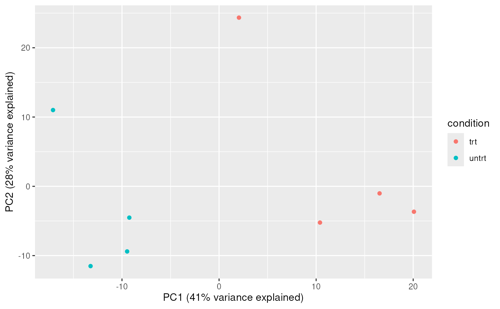

plot_reduced_dimension() takes a `SummarizedExperiment` that has been processed with `reduce_dimensions()` and returns a ggplot of the selected reduced dimensions, optionally coloured by a sample covariate. For PCA, axis labels include the percentage of variance explained.
plot_reduced_dimension(.data, .color, method = "PCA", dims = 1:2)
# S4 method for class 'SummarizedExperiment'
plot_reduced_dimension(.data, .color, method = "PCA", dims = 1:2)
# S4 method for class 'RangedSummarizedExperiment'
plot_reduced_dimension(.data, .color, method = "PCA", dims = 1:2)A ggplot object
A ggplot object
A ggplot object
`r lifecycle::badge("maturing")`
Mangiola, S., Molania, R., Dong, R., Doyle, M. A., & Papenfuss, A. T. (2021). tidybulk: an R tidy framework for modular transcriptomic data analysis. Genome Biology, 22(1), 42. doi:10.1186/s13059-020-02233-7
## Load airway dataset for examples
data('airway', package = 'airway')
# Ensure a 'condition' column exists for examples expecting it
SummarizedExperiment::colData(airway)$condition <- SummarizedExperiment::colData(airway)$dex
counts.PCA =
airway |>
identify_abundant() |>
reduce_dimensions(assay = "counts", method="PCA", .dims = 3)
#> Warning: All samples appear to belong to the same group.
#> Getting the 500 most variable genes
#> Fraction of variance explained by the selected principal components
#> # A tibble: 3 × 2
#> `Fraction of variance` PC
#> <dbl> <int>
#> 1 0.409 1
#> 2 0.285 2
#> 3 0.147 3
#> tidybulk says: to access the raw results do `metadata(.)$tidybulk$PCA`
plot_reduced_dimension(counts.PCA, .color = condition, method = "PCA", dims = 1:2)
